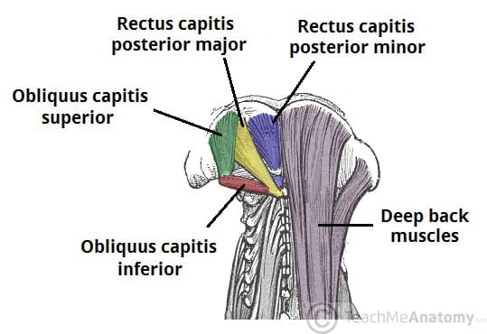

Os músculos suboccipitais são um grupo de quatro pequenos músculos localizados na região posterior do pescoço, abaixo do osso occipital (base do crânio). Eles incluem:
Reto posterior maior da cabeça
Reto posterior menor da cabeça
Oblíquo superior da cabeça
Oblíquo inferior da cabeça
Funções principais:
Controlam movimentos finos da cabeça, como extensão, rotação e inclinação lateral.
Ajudam a manter a estabilidade postural da região cervical superior.
Possuem alta densidade de proprioceptores, contribuindo para o equilíbrio e a consciência espacial da cabeça.
Importância clínica: Disfunções nesses músculos podem causar dores de cabeça tensionais, rigidez cervical e até alterações na articulação atlanto-occipital (entre o crânio e a primeira vértebra cervical). São frequentemente abordados em terapias manuais para alívio de tensão.
Esses músculos, embora pequenos, desempenham um papel essencial na mobilidade e saúde da coluna cervical.
Reto posterior maior da
cabeça
Origem: Processo espinhoso da vértebra C2. Inserção: Parte lateral da linha nucal inferior do osso occipital. Inervação: Nervo suboccipital (ramo posterior de C1). Ação: Extensão e rotação da cabeça.

https://teachmeanatomy.info/
Reto posterior menor da
cabeça
Origem: Tubérculo posterior do arco posterior da vértebra C1 (atlas). Inserção: Parte medial da linha nucal inferior do osso occipital. Inervação: Nervo suboccipital (ramo posterior de C1). Ação: Extensão da cabeça.
https://teachmeanatomy.info/
Oblíquo inferior da cabeça
Origem: Tubérculo posterior do arco posterior da vértebra C2 (áxis). Inserção: Processo transverso da vértebra C1 (atlas). Inervação: Nervo suboccipital (ramo posterior de C1). Ação: Extensão e rotação da cabeça.
https://teachmeanatomy.info/
Oblíquo superior da cabeça
Origem: Processo transverso da vértebra C1. Inserção: Osso occipital entre as linhas nucais superior e inferior. Inervação: Nervo Suboccipital (ramo posterior de C1). Ação: Extensão da cabeça.
https://teachmeanatomy.info/
NETTER: Frank H. Netter Atlas De Anatomia Humana. 8 ed. Rio de Janeiro: Elsevier, 2024.
NETTER: Frank H. Netter Atlas De Anatomia Humana. 8 ed. Rio de Janeiro: Elsevier, 2024.